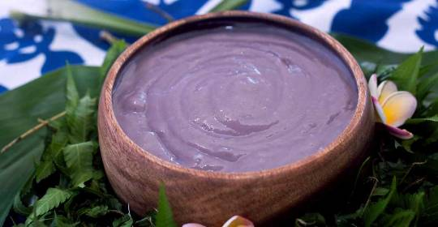

Poi

Poi is a traditional Hawaiian dish made from the root of the taro plant
Poi is a traditional dish made from taro root, believed to have sustained Polynesian travelers during their long voyage to the then-uninhabited Hawaiian islands.
Ingrediants
- 1 pound taro root, scrubbed clean, peeled and cut into 2-inch chunks
- 1/2 cup water
Cooking instructions
- Place taro root chunks in a steamer basket over a pot of boiling water. Steam your taro until fork-soft (about 20 to 25 minutes).
- Transfer steamed taro into your mortar and pound with the pestle for about another 20 minutes until all the fibers and lumps are gone, and the consistency is nice and smooth paste. This is called pa’i’ai.
- Continue mashing as you pour a little water at a time (about 1/2 cup in total) until you get the desired consistency. If you stick your fingers into the poi and you can pick it up with two fingers, that’s called two-finger poi, and it’s the ideal consistency. But if you prefer one-finger poi or three-finger poi, that’s cool too!